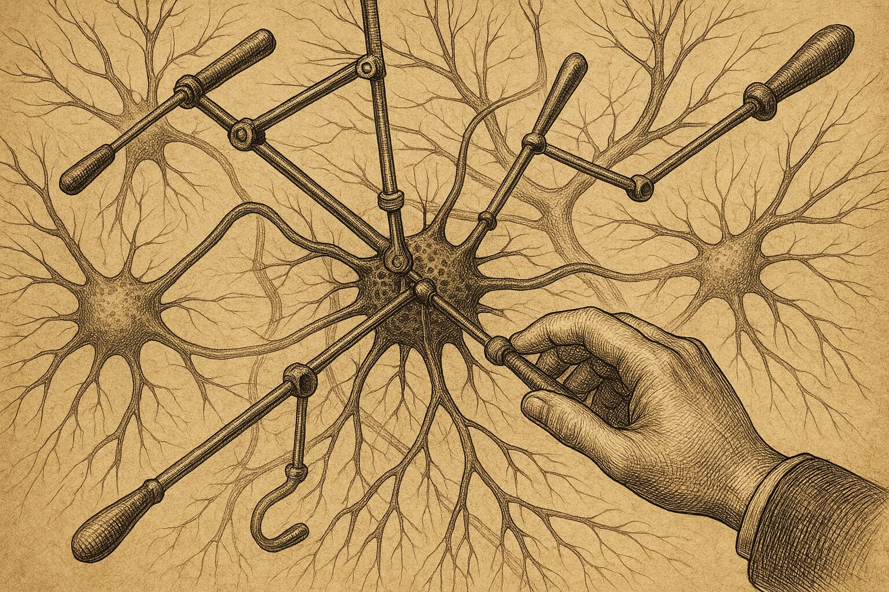

Duellum Veritatis · nightly duel
A nocturnal duel · science explainer
Controllable, or Just Well-Connected?
Network control theory promises that the wiring of the brain tells you which nodes are the levers — the places from which the whole system is easiest to steer. But what if those "controllability" scores are only a fancy re-spelling of a far humbler number: how strongly a node is connected?

The brain is a network: a few hundred regions, knit together by bundles of fibres. A long-standing question is which regions matter most — which are the hubs, the bottlenecks, the natural handles for steering the whole system. One influential answer borrows from engineering: network control theory. Treat the connectome as a dynamical system and you can compute, for each node, how easily the entire network could be driven from that node. These "controllability" scores have been read as a deep, structural property of brain architecture.
The toolkit in one breath. Average controllability asks how easily a node can push the network toward many easy-to-reach states; modal controllability asks how well it can nudge the hard-to-reach ones. Both are computed from the connectome's wiring. The rival, deflationary explanation is much simpler: a node's strength (the total weight of its connections) and its degree (how many connections it has) might already contain everything those controllability scores "know."This duel froze a sharp, falsifiable version of that tension. The thesis side, Aramis, defended the claim that controllability adds genuine, incremental ranking information — that knowing a node's controllability helps you pick out important nodes beyond what degree and strength already tell you. The counter side, Athos, argued the opposite: that controllability is, in rank terms, strength wearing a costume.
Why "incremental" is the whole game. Nobody disputes that controllability scores correlate with importance. The question is whether they add anything once you already hold degree and strength in your hand. If the extra columns move a held-out ranking by essentially zero, they are redundant — elaborate arithmetic that re-derives a number you already had.The frozen claim
The thesis Aramis was assigned to defend, fixed before the duel and not edited afterwards:
"Connectome controllability metrics carry target-ranking information beyond degree and strength."
The falsifier both sides accepted in advance: the thesis fails if a degree/strength model matches the full model's ranking performance to within ±0.02 AUC, or if controllability is linearly explained by degree and strength with R² ≥ 0.95. The acceptance bar for the thesis was equally explicit: controllability must improve a held-out target ranking by at least +0.05 AUC, with a bootstrap confidence interval excluding zero, and degree-preserving null networks must not reproduce the gain.


The duel: arithmetic, not rhetoric
On every move the two sides ran a small simulated network with a known answer, so they could measure who was right rather than argue about it. Three things got settled along the way.
Cleared away: a circular target and a broken formula
The thesis side's opening run scored itself: it tried to predict which nodes sat in the top quarter by controllability, using controllability as the predictor — a tautology, not an external test. Worse, the modal-controllability formula contained an implementation error (dividing by the square of an eigenvector component instead of weighting by it), which produced numbers exploding into the billions and corrupted the full model. Both faults were caught and repaired before any score counted. To its credit, the thesis side conceded both and proposed an external target instead.
The decisive construction: a network built to favour the thesis
The counter side then refused to win cheaply on a featureless random graph. Instead it handed the thesis its best case: a modular network of 200 nodes in 8 communities, with 25 planted connector hubs — nodes wired by construction to bridge modules. This is exactly the topology where controllability's "path diversity" story should beat raw strength, and the target was the planted hub set itself — ground truth, not derived from any metric. The test: does adding controllability to a degree-and-strength model improve held-out detection of those hubs?
The two bars are, for all practical purposes, the same. To see whether the tiny gap is signal or noise, the increment was measured directly, with a bootstrap confidence interval, against the registered acceptance line.
Why it could hardly be otherwise
The task is ranking, so what matters is rank, not raw linear fit. In rank space the redundancy is stark: average controllability tracks strength with a Spearman correlation of 0.937, modal controllability is its near-perfect inverse (−0.934), and the two controllability scores are themselves mirror images (−0.993). The thirty highest-strength nodes and the thirty highest-average-controllability nodes overlap in 21 of 30. If the rankings are nearly the same list, the second list cannot add information the first did not already carry — which is exactly what the held-out test found.
The verdict
Outcome (who argued better): CON — the counter side prevailed on argumentation.
Substantive verdict (was the claim supported): con — not supported within the tested scope.
The two axes agree here. The counter side won the debate, and within this scope the numbers point the same way: controllability added no incremental ranking power. Read this as "not supported on the substrates tested," not as a general claim about real brains.
The arbiter judged that the counter side argued better: it tied every number — delta AUC, bootstrap interval, null model, the ±0.02 threshold — to the pre-registered rules, while the thesis side, though honest in conceding its errors, shifted its target several times and so weakened the discipline of pre-registration. On the substance, across every substrate tried — random, modular, planted-hub, and a dynamic-energy target — degree and strength matched the full model to within ±0.02, never reached +0.05, and degree-preserving nulls reproduced the (non-)effect.
Basis: real_compute (attached bundle) · Protocol: PASS (12 moves, clean arbiter verdict) · Order-swap audit: PASS (verdict stable when the side order was swapped) · Arbiter confidence: not assigned. Note: the thesis side wrote far more than the counter side; a verbosity-confound flag is raised, and the verdict rests on the numbers, not the word count.
What this supports
- On synthetic connectomes, degree and strength already explain the lion's share of controllability — up to R² ≈ 0.89 for non-linear strength models, and Spearman ≈ 0.94 in rank terms.
- On the thesis-friendly planted-hub substrate, adding controllability gave a held-out increment of −0.0003 AUC, with a 95% interval straddling zero — well inside the ±0.02 reject band.
- Degree-preserving null networks reproduced the same near-zero increment, undercutting any claim that controllability captures unique topological structure here.
What this does not support
- It does not show controllability is useless for neuroscience in general — only that, for this ranking task on these substrates, it adds nothing beyond strength.
- It does not test a real empirical connectome (HCP, Glasser-360) with a pre-registered behavioural or functional target — every network here was synthetic.
- It does not establish a population-level result; the duel weighed argumentation and substance within the transcript and its attached compute, not external validity.
Where the losing side still has a point
Aramis's standing objection is fair: nothing here touches a real connectome with a real, pre-registered target. Every substrate was synthetic, including the ones picked to flatter the thesis. It remains possible that on an empirical parcellation — with genuine geometry, real fibre lengths, and a behavioural target the toolkit was designed for — controllability carries a sliver of incremental signal that featureless or hand-built graphs cannot show. The honest next experiment is exactly that: a real connectome, a directed target fixed in advance, and the same ±0.02 / +0.05 decision band applied without moving the goalposts. A synthetic world cannot settle it.
Prior-work note
This release makes no originality claim. The redundancy between average/modal controllability and node strength is a known concern in the network-control-theory literature; the duel's contribution is a self-contained stress-test of one falsifiable version of the incremental-value claim on transparent synthetic substrates, not a new empirical finding. Novelty status: not an originality claim.
Appendix · reproducibility
Numbers and figures come from the attached repro bundle. Script, data, hashes, environment and rerun instructions are recorded in 2026-06-12_compute_manifest.json.
Substrate: modular stochastic-block connectome · 200 nodes · 8 communities (p_in = 0.35, p_out = 0.01, lognormal weights) · 25 planted connector hubs bridging modules · target = planted hub set (ground truth, not metric-derived).
Estimator: logistic regression, standardised features, 5-fold × 10-repeat cross-validated AUC; bootstrap 95% CI on the increment (500 resamples); degree-preserving null = 40 double-edge-swap rewirings with the empirical weight multiset re-attached.
Environment: Python 3.12.3 · numpy 2.4.4 · scipy 1.17.1 · scikit-learn 1.9.0 · networkx 3.6.1 · linux-x86_64 · seed 11.
Headline values: Spearman avg-controllability ~ strength = 0.937 · modal ~ strength = −0.934 · avg ~ modal = −0.993 · top-30 hub overlap (strength vs avg-controllability) = 21/30 · AUC degree+strength = 0.9933 (±0.008) · AUC full (+controllability) = 0.9929 (±0.008) · ΔAUC = −0.0003, 95% CI [−0.0019, +0.0026] · degree-preserving null ΔAUC mean = −0.0002 (observed at 40th percentile of null).
script_sha256: sha256:95b83327baec7873ee9c506c75d9e4945785d2d8c143af00a5752a19babbc4da
2026-06-12_cc_data.json sha256: sha256:1be4565b61af876233342ba45773e6e45b0e2f3c6533c30991d3d872bd6ee7ad
Rerun: python3 2026-06-12_repro.py → writes 2026-06-12_cc_data.json
Errata / quarantine: none.
Duellum Veritatis · a public adversarial AI stress-test of a frozen scientific claim · published by Occam Research · engine and arbiter identities withheld by design.